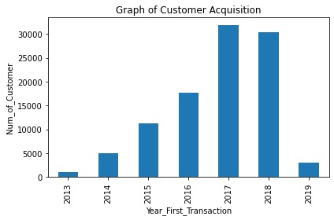
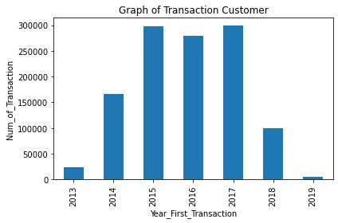
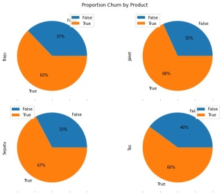
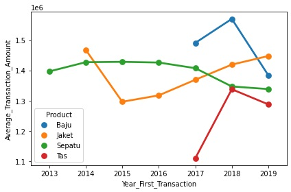

Data analysis is very important part of data processing. It is use to extract a important information and to be able story telling all that data in nice, and easy understand for viewer.
In a business situation, a company need knowledge about their data so they can make all that important decision. So it required a good and clean data analysis to have a good insight about it.
In this example i'm using a data from DQLab Academy to make a churn analysis. This data is from a retail shop and their have a problem because the declining customer who buy again. When the customer didn't buy again after 6 month it is categorized as a churn customer.
The first thing to do is extract information about how many customer the shop get per year. It will allow us to gain insight about the performance of product they sell. From the graphic below it clearly shows that there are increasing customer count per year. But there are declining in count transaction per year starting at year 2018.
 Next I'm identifying how much churn customer in the database. To make things easier for identifying the problem I'm classify the churn customer per product. There are 4 type product in the store, which is "Tas" (Bag), "Sepatu" (Shoes), "Baju" (Shirt), and "Jaket" (Jacket). From the product above the one that has many churn customer is "Tas", it show at the average of product that has been sold per year that "Tas" has below sales from any other product it also show declined sales at 2019.
 From the graph above we can conlude in that store, the bag is not a effective product. On the contrary, The shoes is the most stable product. It doesn't show any significant difference per year. The jacket is one of the good product in the store, it has the same average count product that has been sold as the shoes.